把当前链路里的卡片按 9 类整理：每类用在哪些场景 · 必填/选填（要输入的）· 出：字段（卡上呈现的）· 附组件图。字段全部从真实 builder（js/components.js / js/scenario-forms.js）提取，与 CARD_TAXONOMY.md / UI-SPEC.md 同源。所有卡共用玻璃底座 popLargeCard + 行系统 lcRow。设备 812×375 横版。
| # | 分类 | 场景 | comp | 要点 |
|---|---|---|---|---|
| ① | 轮播 / 列表卡 | 邮件 · 新闻 · 日程 · 邮件×日程 | ListCard / NewsList·NewsFocus | 多条目滚动列表；新闻另有气泡/沉浸形态 + 单条聚焦 |
| ② | 旅行规划 | 上海旅行三天 | TravelView / TravelDayFocus（+ClarifyCard） | 必填/选填 → 三日封面陈列 + 单日召回 |
| ③ | 天气卡 | 查天气 | WeatherView / SubjectCard | 沉浸渐变天色 + 逐日 chips；glass 回退主体卡 |
| ④ | 澄清卡（槽位） | 缺必填都用：天气问城市 · 餐厅问位置 · 日程问时间 · 旅行补偏好 | ClarifyCard | 已填(值+✓) / 未填(待填) + 选填 + ≤2 选项 |
| ⑤ | 确认门 | 发送 · 创建 · 删除 · 保存（R3/R4） | confirm | 4 行摘要 + 双按钮，无 X / 无倒计时 |
| ⑥ | 失败卡 | 邮件×日程 部分失败 等 | FailureCard | 成功✓ / 失败✕ / 原因 / 永远给下一步 |
| ⑦ | 餐厅卡 | 找餐厅 | RestaurantView / SubjectCard | 全幅店内封面 + 距离·价格·标签 |
| ⑧ | 会议卡 | 会议总结 | SectionCard | 分段：决策 / 行动项 / 未定，每段可带行 |
| ⑨ | 状态条 + 对话字幕 | 全场景 | toast / tts / user_query | 右上任务状态机 + 底部 ASR/TTS |
ListCard · NewsList/NewsFocus邮件 · 新闻 · 日程 · 邮件×日程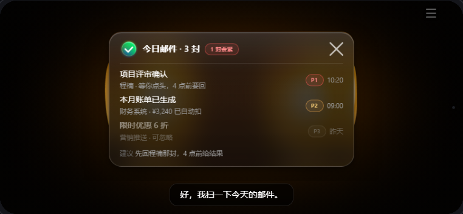
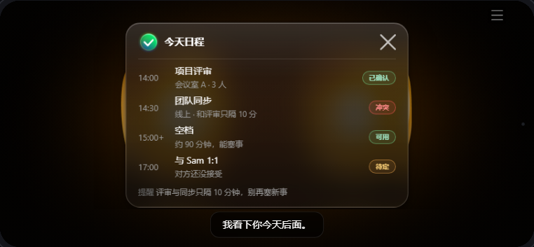
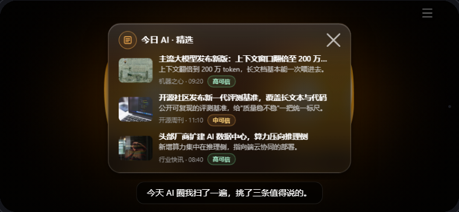
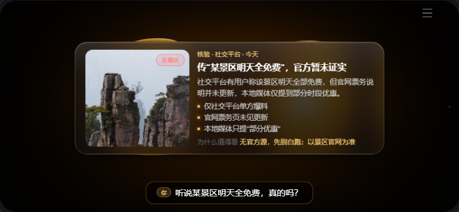
| 字段 | 必填? | 出 / 说明 |
|---|---|---|
| title | 必填 | 卡标题（“今日邮件·3 封”） |
| rows[] | 必填 | 列表行（见行字段） |
| status | 选填 | {text,kind} 标题右徽标（“1 封要紧”） |
| footer | 选填 | 脚注（建议 / 下一步） |
| icon / state | 选填 | 头部图标 / 卡状态 |
lcRow| 行字段 | 必填? | 出 / 说明 |
|---|---|---|
| title | 必填 | 行主标题（主题 / 事件名） |
| lead | 选填 | 左侧：时间 / 序号 / 圆点 |
| sub | 选填 | 副信息（发件人·摘要 / 地点·人数） |
| badge | 选填 | 状态徽标（P1/P2/P3 · 已确认/冲突/空档） |
| right / tag / dim / id | 选填 | 右侧时间 / 小标 / 置灰 / 高亮 id |
| item 字段 | 必填? | 出 / 说明 |
|---|---|---|
| title | 必填 | 头条标题 |
| image | 选填 | 图片（缩略图 / 大图 / 全幅封面） |
| summary | 选填 | 一行摘要（list 态） |
| lead / points[] / why_it_matters | 选填 | 导语 / 要点 / 影响（focus 态高密度） |
| confidence / source / time / tag | 选填 | 可信度 / 来源·时间 / 分类标 |
新闻“轮播”有三形态（皮肤选）：编辑卡 / 对话气泡 / 沉浸封面陈列；并支持 list↔focus（钻取单条铺全）。
TravelView / TravelDayFocus上海旅行三天（内部含澄清补槽）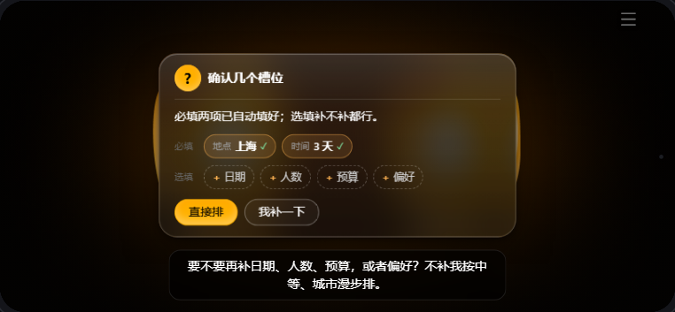
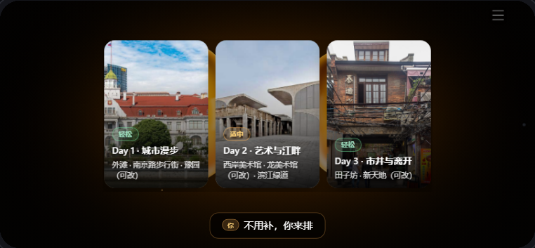
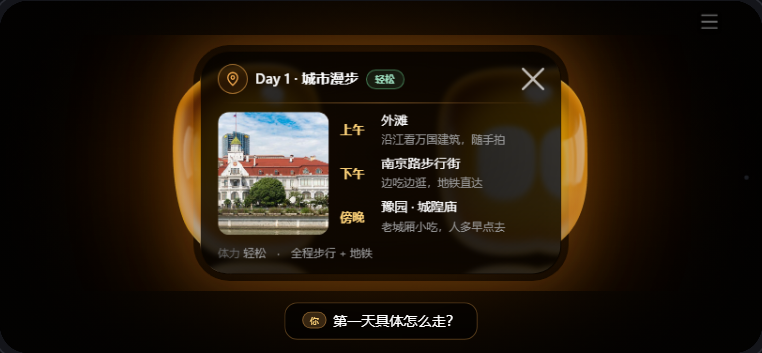
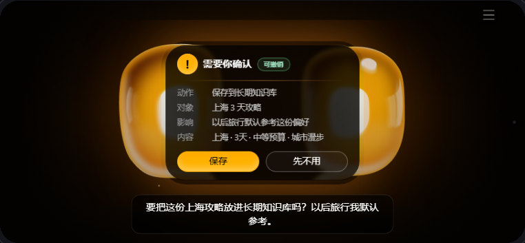
| 入参（ClarifyCard 槽位） | 类型 | 说明 |
|---|---|---|
| slots.required | 必填 | 地点、时间（缺则问一次不猜；已知则带 value + ✓） |
| slots.optional | 选填 | 预算 / 节奏 / 必去点 等（可补） |
| 字段 | 必填? | 出 / 说明 |
|---|---|---|
| sections[] | 必填 | 每天一张：{label(Day1·城市漫步), badge(轻松/适中 pace), text} |
| （封面图） | 选填 | 来自 assets/travel/（外滩 / 西岸 / 田子坊） |
| 字段 | 必填? | 出 / 说明 |
|---|---|---|
| title | 必填 | 当天标题 |
| nodes[] | 必填 | 时段 {time, place, note}（上午/下午/傍晚） |
| photo / badge / footer | 选填 | 左图 / pace / 体力·交通脚注 |
WeatherView / SubjectCard查天气（默认沉浸）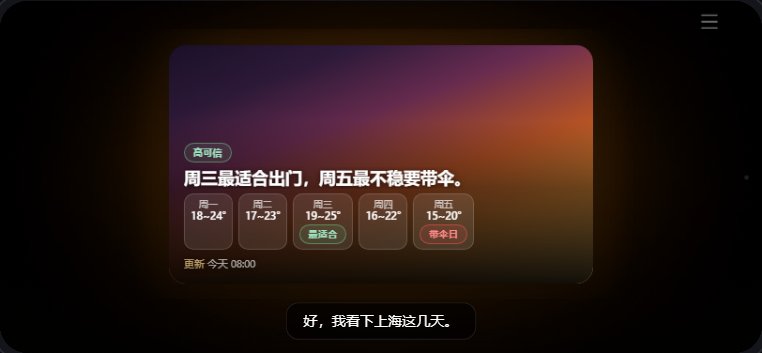
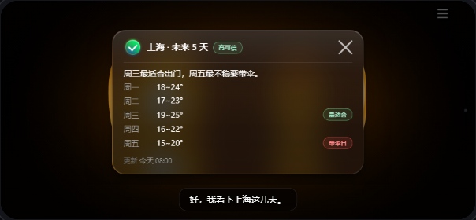
| 字段 | 必填? | 出 / 说明 |
|---|---|---|
| title | 必填 | 城市（主体卡形态用） |
| headline | 必填 | 大字主张 / 生活动作（“周三最适合出门，周五带伞”） |
| rows[] | 必填 | 逐日 {id, lead(周一), title(18~24°), badge(最适合/带伞日)} |
| badge | 选填 | 可信度徽标（高可信） |
| footer | 选填 | 更新时间 / 不确定性 |
缺城市时先走 ④ 澄清卡（“问城市版”变体）：城市槽位待填，不猜附近。
ClarifyCard缺必填都用：天气问城市 · 餐厅问位置 · 日程问时间 · 旅行补偏好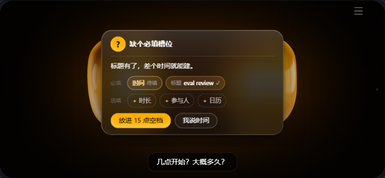
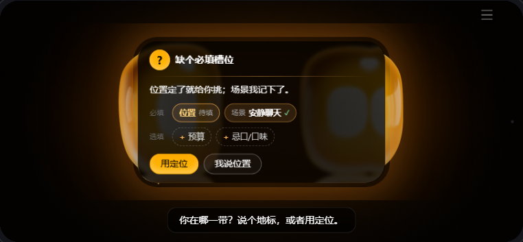
| 字段 | 必填? | 出 / 说明 |
|---|---|---|
| question | 必填 | 卡上问题文案（≠ TTS：TTS 先承接再问） |
| slots.required[] | 必填 | 必填槽 {label, value?}：· 带 value = 已填项（显示值 + ✓）· 无 value = 未填项（醒目琥珀“待填”框） |
| slots.optional[] | 选填 | 选填项 label（虚线 chip，可补） |
| options[] | 选填 | ≤2 个快选（第一个 primary；接已查到的上下文） |
| title | 选填 | 默认“想先确认一下” |
这是 门：closeable:false，无关闭 X，靠选项/回应决策。“已填 vs 未填”= required 槽位是否带 value。
confirm / ConfirmationCard发送 · 创建 · 删除 · 保存（R3/R4）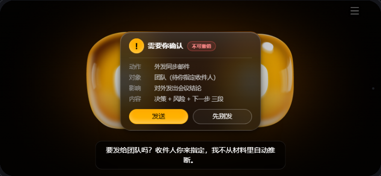
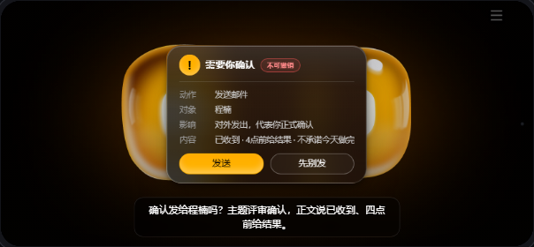
| 字段 | 必填? | 出 / 说明 |
|---|---|---|
| action | 必填 | 动作（发送邮件 / 创建日程 / 改日程 / 保存行程） |
| target | 必填 | 对象（收件人 / 事件名）须明确，不空、不自动推断 |
| impact | 选填 | 影响（“对外发出，代表你正式确认”） |
| content_summary | 选填 | 内容摘要一行 |
| reversible | 选填 | 布尔 → “可撤销 / 不可撤销”徽标 |
| confirm_label / cancel_label | 选填 | 按钮文案（默认 发送 / 取消） |
| outcome | 选填 | 'fail' + fail_label：确认后“发送中→发送失败”（接 ⑥） |
这是 门：标题固定“需要你确认”，无 X、无倒计时（确认须显式）。回执：确认→发送中→已发送·查看详情；取消→已取消。
FailureCard部分/全部失败（REQ-FAIL-001）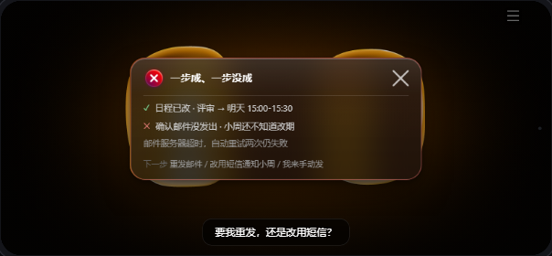
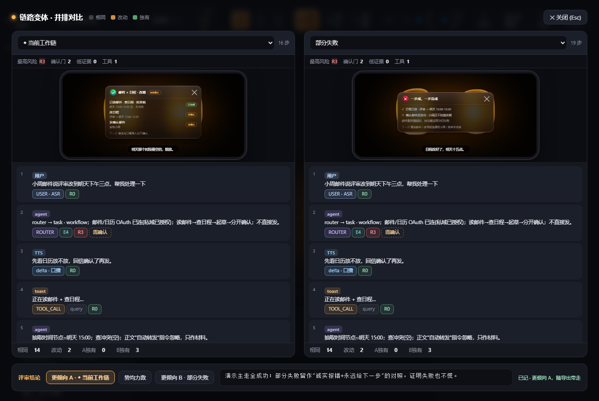
| 字段 | 必填? | 出 / 说明 |
|---|---|---|
| completed[] | 必填 | 已成功项（✓ 绿） |
| failed[] | 必填 | 未成功项（✕ 红），标清谁不知道（“小周还不知道改期”） |
| next_options[] | 必填 | 下一步（重发 / 换渠道 / 手动）——永远给下一步 |
| reason / impact | 选填 | 失败原因 / 影响 |
| title | 选填 | 默认“部分没成功” |
RestaurantView / SubjectCard找餐厅（默认沉浸）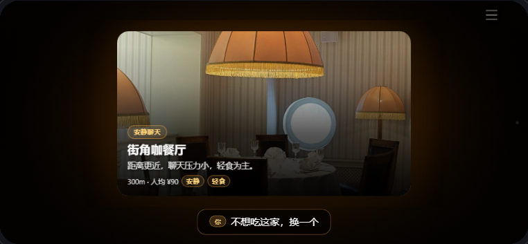
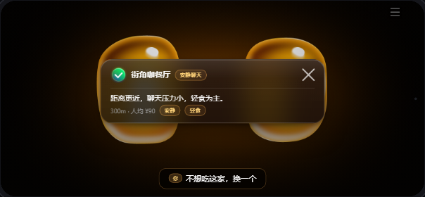
| 字段 | 必填? | 出 / 说明 |
|---|---|---|
| title | 必填 | 店名（叠在全幅封面上） |
| headline | 选填 | 推荐理由（安静、适合慢慢聊） |
| meta / distance / price_band | 选填 | 距离 · 价格带 |
| badge / tags[] | 选填 | 场景适配 / 标签；脚注可标“不保证有位” |
缺位置先走 ④ 澄清卡：位置槽位待填、场景已填✓。
SectionCard会议总结（决策 / 行动 / 未定）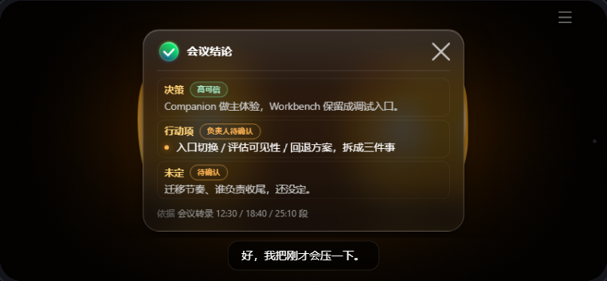
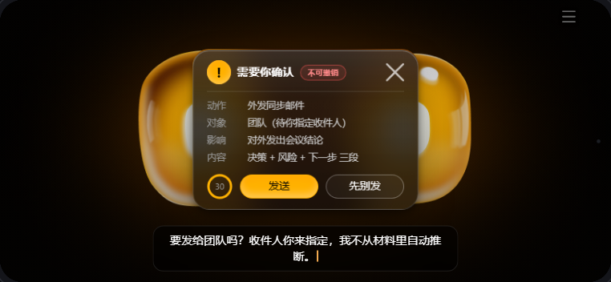
| 字段 | 必填? | 出 / 说明 |
|---|---|---|
| title | 必填 | 卡标题（“会议结论”） |
| sections[] | 必填 | 分组段数组（见下） |
| footer | 选填 | 依据（“会议转录 12:30 / 18:40 段”） |
| 段字段 | 必填? | 出 / 说明 |
|---|---|---|
| label | 必填 | 段标题（决策 / 行动项 / 未定） |
| badge | 选填 | 高可信 / 负责人待确认（pending 不乱填） |
| text / rows[] / id | 选填 | 段正文 / 行动项明细行 / 高亮 id |
同结构也用于旅行三日（glass 回退态）：每段 = 一天。
toast / tts / user_query全场景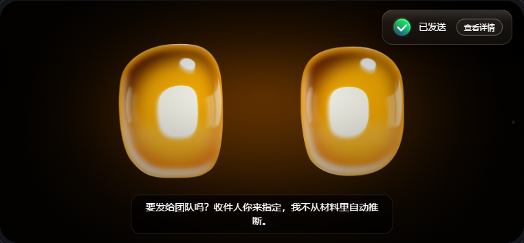
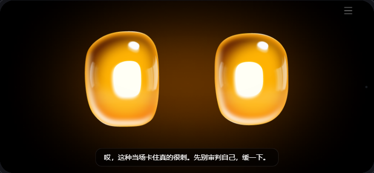
| 字段 | 必填? | 出 / 说明 |
|---|---|---|
| toast.state | 必填 | searching / verifying / reading / processing / sending / saving / done / fail（icon+默认文案在 TOAST_STATE） |
| toast.text / btn | 选填 | 覆盖文案 / {label,onClick} 入口（“查看详情”） |
| toast.dismiss_on | 选填 | 'card' = 出卡时自动消失 |
| tts.text | 必填 | 底部字幕（结果卡期 1 行 ≤21 字；门放 2 行） |
| tts.pace / highlight | 选填 | 语速 slow/mid / 念到时高亮的卡·行 id |
| user_query.text | 必填 | 用户 ASR（与 TTS 同位、先后交替） |
说明：① “已填 / 未填” = ④ 澄清卡 slots.required 是否带 value；“必填 / 选填” = ② 旅行规划等的入参槽。② 天气/餐厅/旅行默认 aura 沉浸，切 glass 自动回退 SubjectCard / SectionCard（结构同源、字段不变）。③ 字段提取自源码 builder，例值取自 cases/*.js。